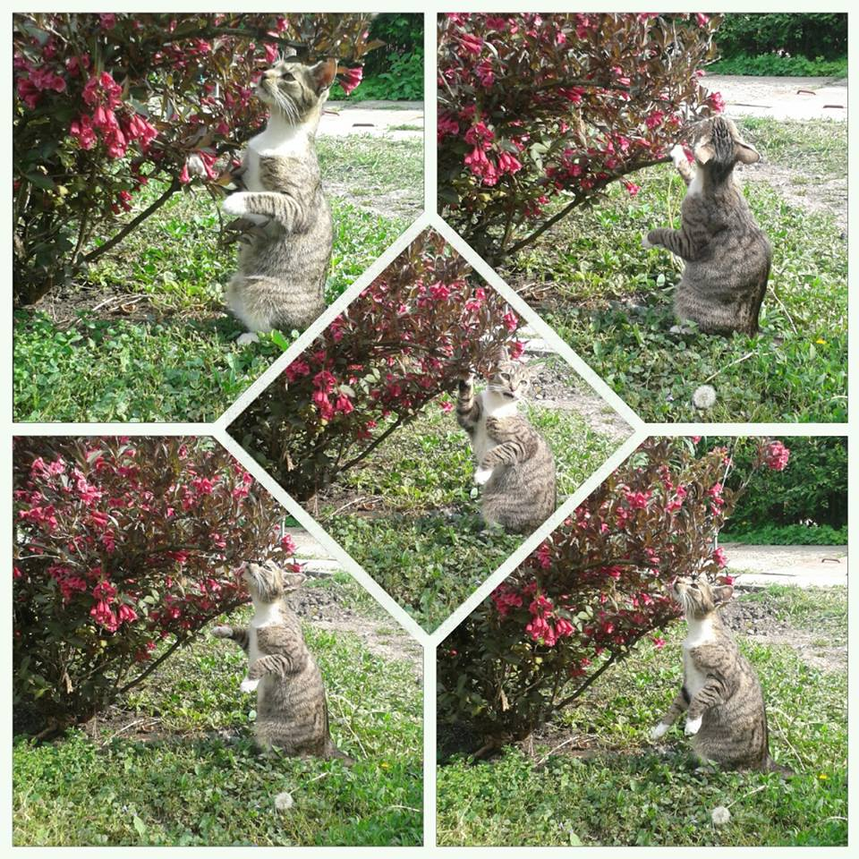

2016. május 21., szombat
Lassan, de (maga)biztosan
Álalános beharangozás: Elérkezett a nap, amikor újabb mérföldkőhöz érkeztünk. Megosztottam több csoportban is a blogomat, és nagyon nagyon sok kommentet kaptam. Egyhangúan mindenki azt javasolta, hogy magyarba ne bízzunk. Sem közvetítőcégekben, sem pedig albérletkereső cégekben. De még olyan munkahelyekre se menjünk, ahol magyar a főnök. Azt nem értem, ha mindenki ezt mondja, akkor miért nem próbál bízni mindenki? Mindenesetre nem terveztünk magyar területre menni. Kezdem belátni, hogy valahol igazuk van. Ez egy magyar albérletkereső csoportban tisztázódott bennem. Volt egy poszt, amiben egy nő felháborodását fejezte ki, mert túl drágák az albérletek Miskolcon. Külföldi árakat kérnek lassan itt is. Erre válaszoltam, hogy persze, hogy drágák, Angliában is egyenesen arányos árak vannak, azért bérelnek többen szobát. Ha itt is szobát bérelnének, többet tudnának spórolni, és hamarabb vehetnének lakást. Mert az albérlet nem cél, hanem ugródeszka. Természetesen jöttek a negatív kommentek, hogy biztos nekem is van lakásom és én is kapzsi vagyok. Hiába írtam, hogy 20 éves vagyok, és barátom szüleinél lakom szívességből. Nagyon taszító ez a széttartás. Az intelligens és normális modoromnak hála letiltottak. Magyarországon vagyok, nem csalódtam. „Valaki nincs egy véleményen velem. Kitiltom.” Ennyit szerettem volna írni arról, hogy a magyarokról jelenleg hol áll mások véleménye, valamint az én véleményem. Meglepődtem, mert facebookon és emailben rengeteg segítséget kaptam. Írt nekem vendéglátós, felszolgáló, pultos, de takarító is és programozó is. Mondták, hogy sokat kell dolgozni, de nagyon megéri, és megbecsülik őket. Történt egy nagyon aranyos dolog is. Egy lánytól megkérdeztem, hogy mennyire tud nyáron rövidnadrágban vagy atlétában járni. Azt a választ kaptam, hogy nem igazán, de évente 1-2 nyaralásra telik meleg tengerparton. J Ezt elképzelni sem tudom most. Nyelv: A nyelvet nagyon szeretném megtanulni. Régi álmom, hogy egyszer majd rendezvényszervező lehessek. Emiatt nagyon sokat fejlesztem magam. A Californication című sorozatot kezdtem el nézni angolul, már egyszer magyarul láttam, így nagyjából tudom miről van szó. Emellett az Amerikai Fatert is angolul nézzünk, ha vége akkor kezdjük elölről a Family Guyt. Megoldottam egy B2 nyelvvizsgafeladatot, és nagy meglepetésemre 93% lett. A DExam nyelvvizsga feladatait csinálom, decemberben szeretnék nyelvvizsgázni majd. Megvettem az 5perc angol magazint, amit hangosan olvasok és fordítok. Barátom nagyon sokat segít, a kiejtésben is, és az új szavakban is. Minden nap elmond pár kifejezést, hogy mire mit használnak az angolok. Például sütésnél, vagy épp köszönésnél. Letöltöttünk telefonra egy rajzos játékot, ahol angol szavakat kapunk, le kell rajzolni, a másik pedig kitalálja. Aztán ő rajzol, és mi találjuk ki. Rengeteg szót tanultam meg így. Valamint megvettünk egy angol társalgási kézikönyvet, amiben mondatok vannak, és minden nap megtanulok 25 kifejezést. És nagyon sokat beszélgetünk, például séta közben. Megnéztük, hogy az NI-s ügyintézésnél mikre kérdeznek rá, és ezeket a kérdéseket-válaszokat mondom el magamtól. Aki kezd angolt tanulni, ajánlom, hogy olyasmivel tegye, amit szeret csinálni, vagy amit használni fog. Tapasztalatból mondom, hogy sokkal több ragad meg, mint ha egy szótárat magolnál be. Kettő bejegyzéssel ezelőtt írtam, hogy el fogok kezdeni egy vendéglátós iskolát. Felvételiztem,jövő héten lesz eredmény. Angol szóbeli vizsga volt, és mit ne mondjak, jól sikerült. Összefüggően képes voltam beszélni. Ez azért furcsa, mert ha érettségin nem jószívű a tanár, akkor nem megyek át a szóbelin, azzal a tudással. És a nem kívánatos pénzügyek: Sajnos ebben a hónapban sem indult el a tanfolyam. Így a borítékba nem tettünk be semmit, inkább kivettünk. 45.000 forintnál járunk sajnos. Viszont arra ment el ugyan ennyi, hogy befektettünk egy internetes dologba, amihez én nem értek, szóval Balázs intézi, de 1 év múlva megkétszereződik a pénzünk (hisz az egyik rokona is kipróbálta, és tényleg működik). Balázs isklájában kiderült, hogy ha gyakorlatra mennek szeptembertől, akkor azért kapnak fizetést. Ezekből az összegekből (az én tanfolyamos fizetésem, és Balázs gyakorlata) még mindig úgy néz ki, hogy ki fogunk tudni költözni. Aggódunk, hogy az angolok mennyire engedékenyek az állatokkal szemben. A kiscicánkat is ki kellene vinnünk, egészségügyi szempontból. A pánkbetegségemre nagyon jó hatással van. A legtöbb albérletbe nem szívesen engedik a jószágokat, de reméljük, toleránsabbak lesznek, mint itt. Balázsról még megemlíteném, hogy most kell szakosodniuk majd, és a webfejlesztést választotta. Egyik ismerősünk tud Angliában olyan munkát, amely még lakástámogatást is adna, ha ott helyezkedne el, csak nem biztos, hogy az iskolája engedélyezni. De már ebből a szempontból is Anglia szimpatikusabb nekünk, mint Magyarország, hiába itt is hiány van a programozókból. Ebben a hónapban igazából ennyi történt velünk, nehezen, de csúszunk előre. Köszönöm, hogy elolvastátok, várom ismét az emaileket a terike.alt9@gmal.com címre, vagy kommentben, vagy facebookon.
2016. április 15., péntek
Minden szó kifelé seper
Balázzsal ültünk Miskolcon a Kormányablakban, hogy a TB-jét intézzük. Leült mellénk egy idős néni, és elmesélte, hogy a fia Németországban, a lánya Ausztriában van, és most intéz üdülést a nyáron, hogy az unokákkal lehessen. 10 évvel ezelőtt ő is ment volna, ha tudja, hogy megéli a 70-et. Beszélgettünk, majd kérdezősködött rólunk is. Meséltük, hogy mi Angliába mennénk. Ő elmondott egy egészen megdöbbentő történetet. A szomszédja egy gyermekorvos, és egy nőgyógyász volt. 24 órákat dolgoztak mindketten, volt mikor 30 órát is bent kellett lenniük, a 2 gyerekükre más vigyázott. Szép nagy házban éltek, anyagilag rendben voltak. Nyaralni nem mehettek el, mert ügyelet az mindig van. Kimerültek, idegesek és feszültek voltak. Havonta pár olyan alkalom adódott, hogy mindketten otthon lettek volna. Egyszer besokalltak, és Angliába költöztek. Még többet kerestek, de nem ez volt a legfontosabb. 2 hétig dolgoznak, 2 hétig pedig otthon pihenhetnek a családdal. Azóta bemertek vállalni még egy gyereket, sportolnak, nyaralnak és teljes az életük. Azt mondták, hogy Magyarországon erről még álmodni se mertek, hogy lesz egy olyan hétvége, ahol a gyerekeikkel labdázhatnak.
Zene:
Unom már